Formerly known as Tea & Oatcakes, Tea & Oat is a jewellery brand rooted in its elegant, nature-inspired designs and quiet minimalism.
Founded by Isabel Ramos, Tea & Oat has been crafting contemporary Portuguese jewellery since 2014. The brand’s pieces are delicate yet grounded — drawing from organic forms, subtle textures, and the beauty of everyday life.
Now reintroduced as Tea & Oat, the brand enters a new chapter with a renewed visual identity that reflects its core values: mindful design, artisanal craft, and a deep connection to nature.
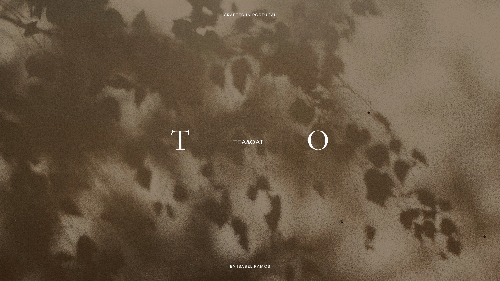
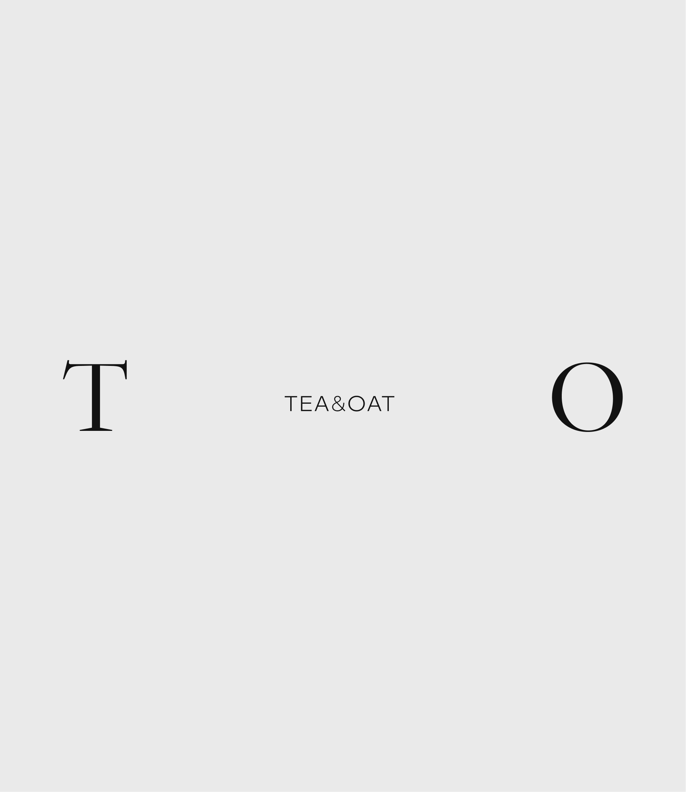
The logo is built from minimalist typographic forms that reflect the brand’s essence: nature, balance, and quiet strength. The initials T and O act as visual anchors, contrasting in weight and character, mirroring the duality in Tea & Oat’s jewellery: structured yet soft, refined yet organic.
Carefully considered spacing creates a calm rhythm and generous breathing room, echoing the brand’s slow and intentional approach. At the centre, a clean contemporary typeface complements the contrasting serif initials, bringing clarity and balance to the composition.
A stylized flower completes the identity, drawing subtle inspiration from Art Nouveau and its flowing lines and organic motifs. Reduced to its simplest form, the symbol reinforces the connection to nature and craft while introducing a soft, expressive detail to the visual language.
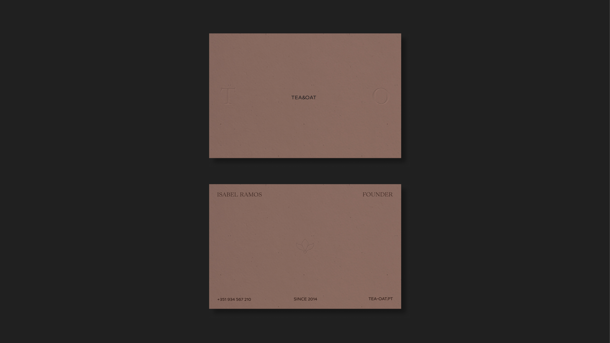
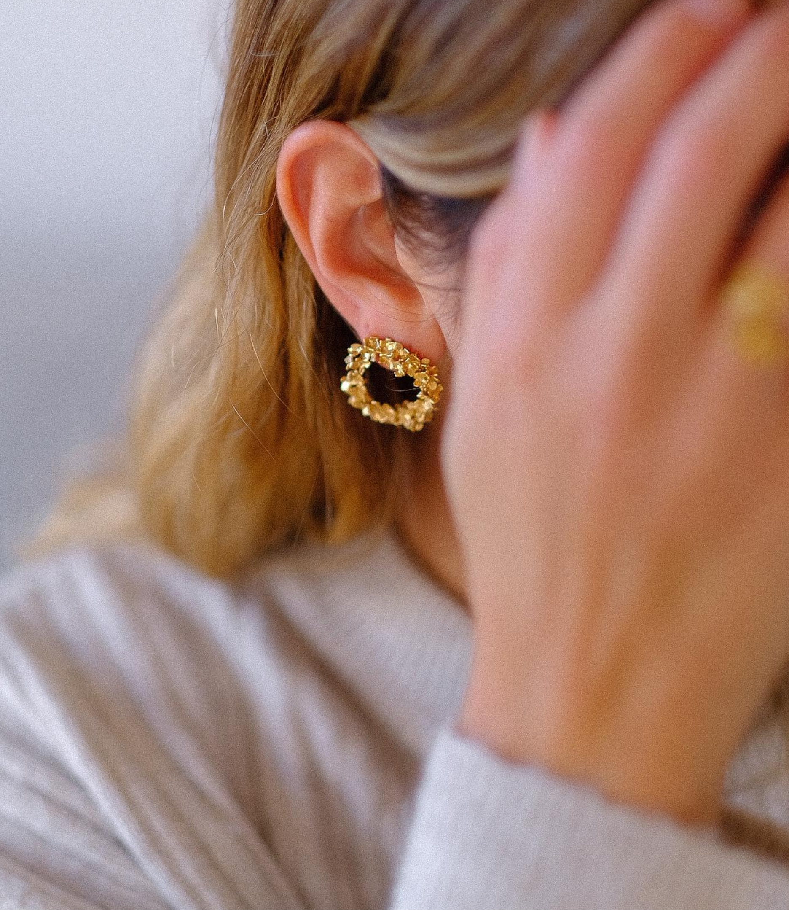
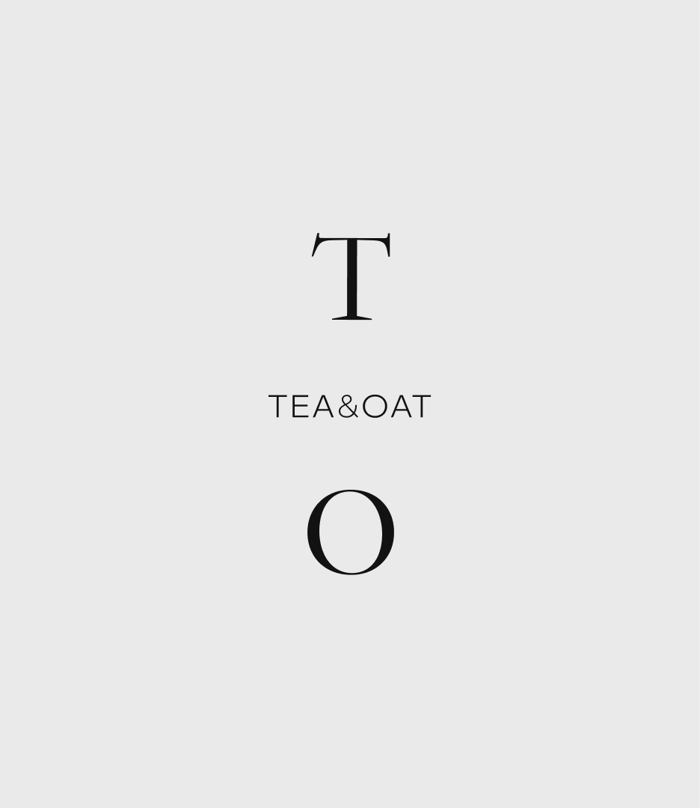
A vertical logo variation extends the identity system, allowing the mark to adapt seamlessly across different formats and applications. Consistency is maintained throughout, while the typographic system balances elegance and clarity, pairing crafted details with a sense of modern simplicity.
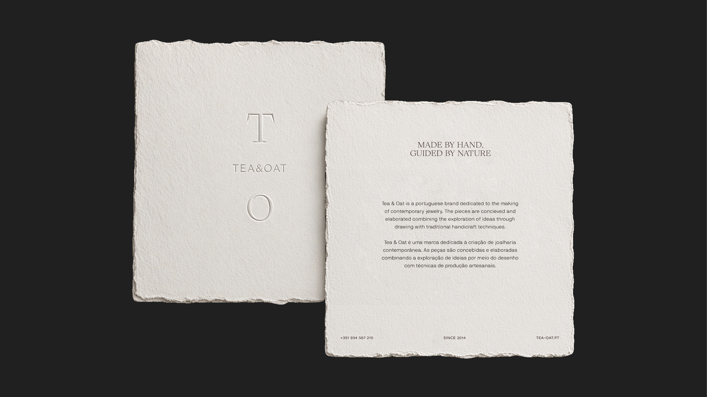
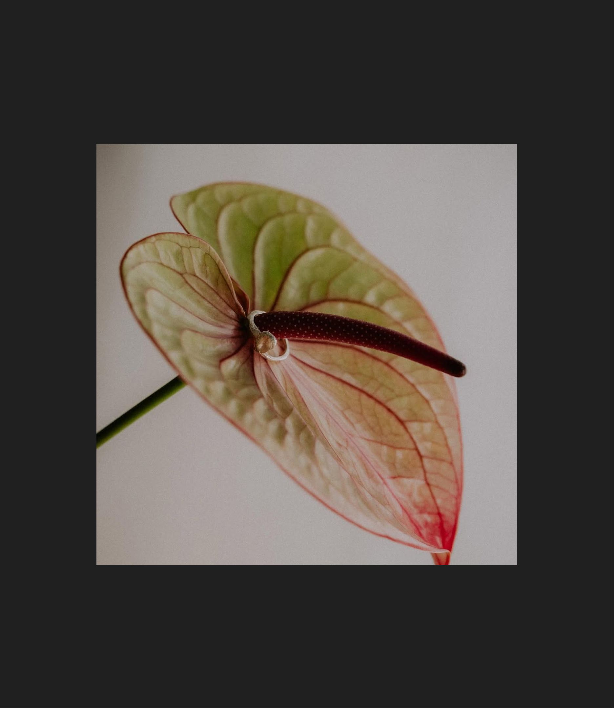
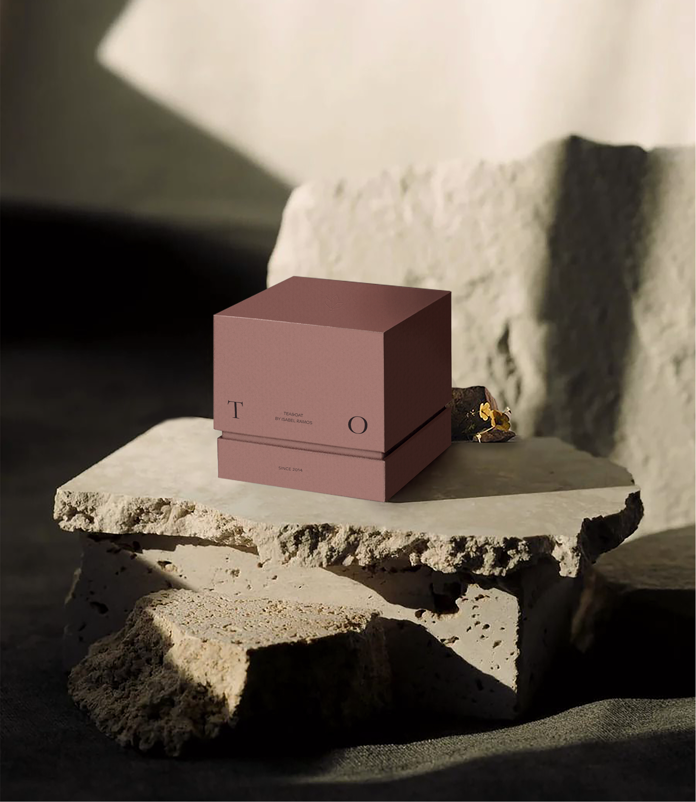
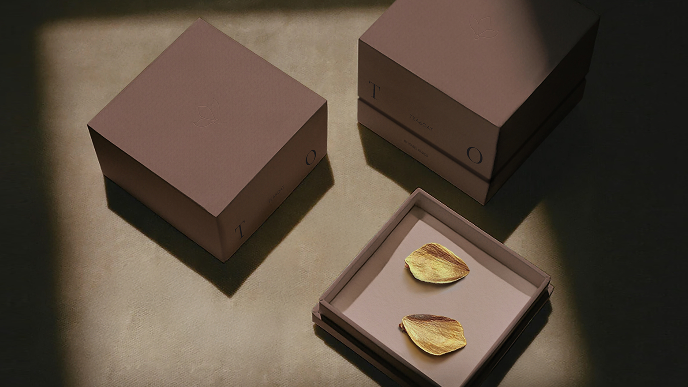
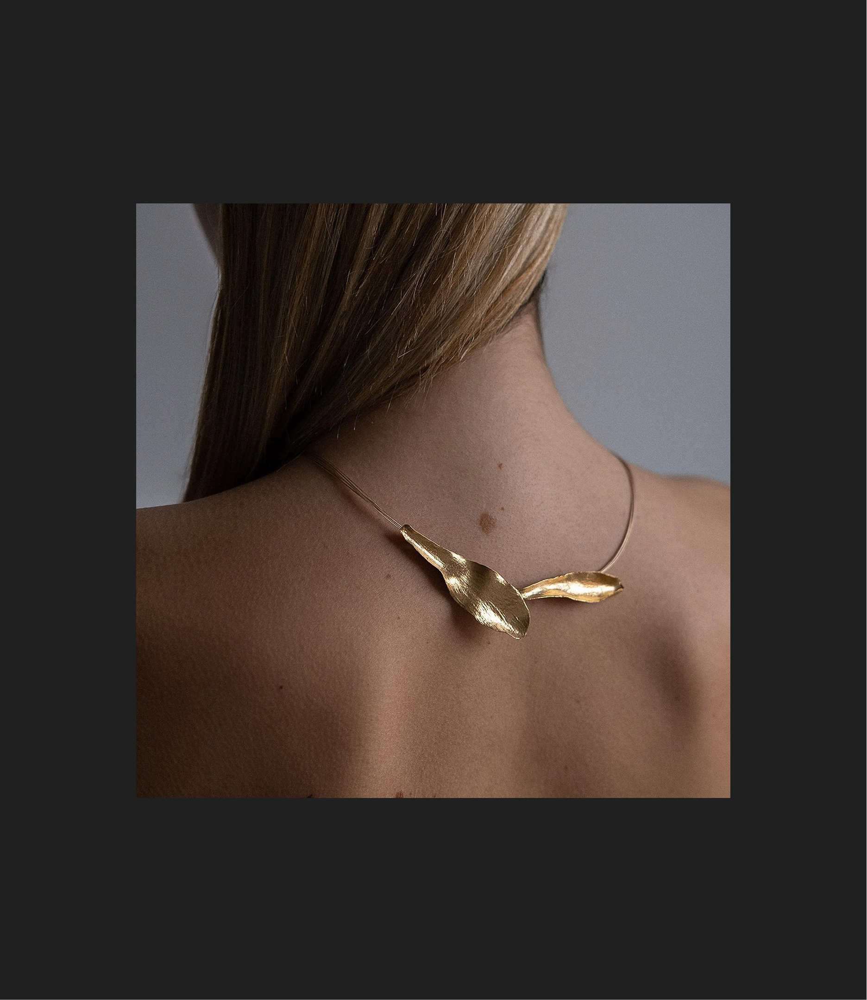
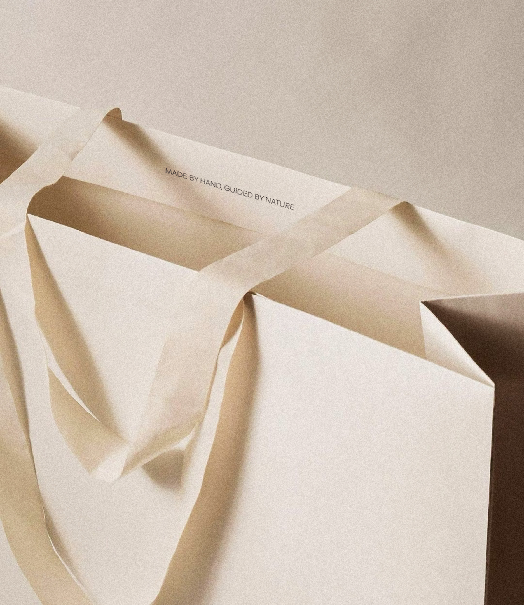
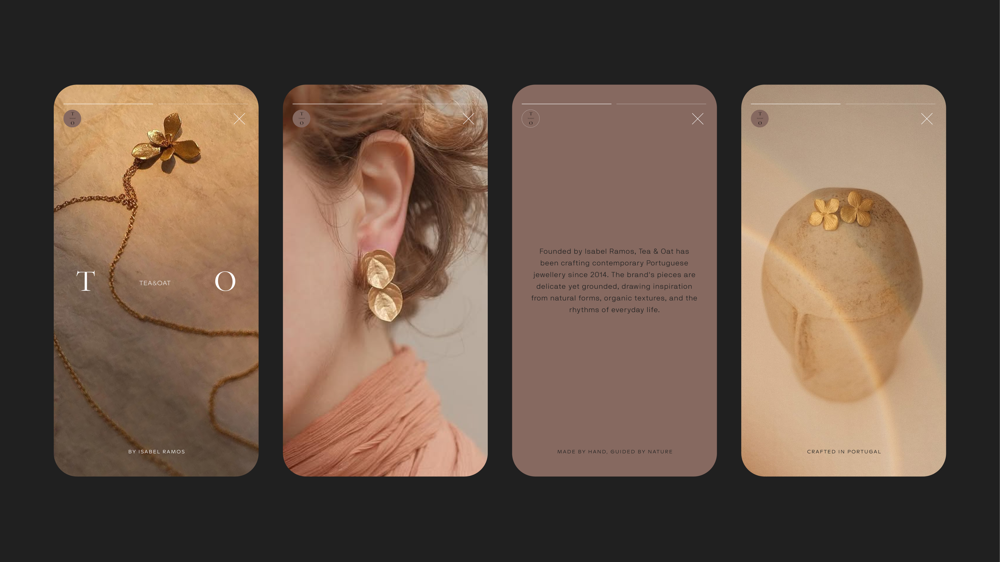